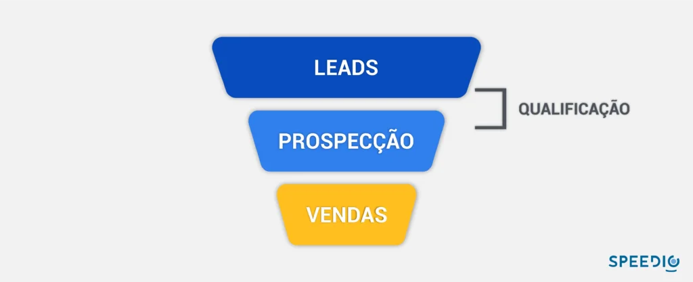
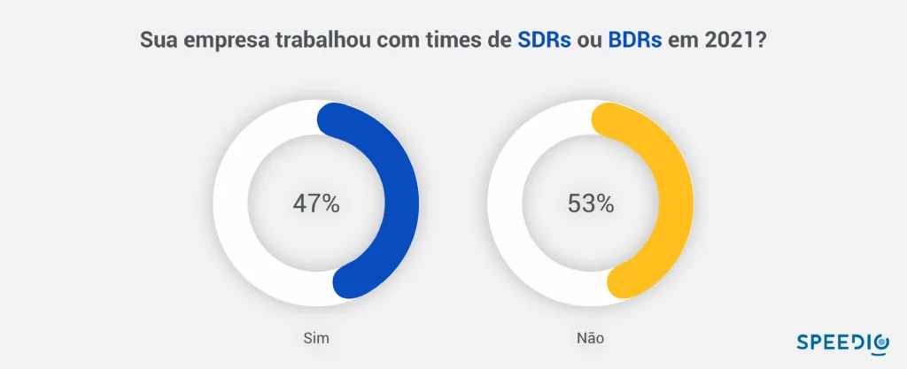

Artigos da Categoria
Prospecção de vendas B2B: o guia definitivo
Dentro dos processos de vendas existem diversas etapas e a prospecção de vendas B2B é uma delas.
A etapa de prospecção de vendas B2B envolve a pesquisa, a identificação e a construção de um relacionamento com consumidores que correspondem ao perfil de cliente ideal e que podem vir a se tornar clientes da empresa.
Neste post você verá
O que é prospecção ativa?
A prospecção ativa é uma estratégia de vendas onde a empresa toma a iniciativa de entrar em contato direto com potenciais clientes, com o objetivo de apresentar seus produtos ou serviços e gerar novas oportunidades de negócio, diferentemente da prospecção passiva, que aguarda o cliente fazer o primeiro contato.
O que é ICP (perfil de cliente ideal)?
O ICP (Ideal Customer Profile) refere-se à descrição detalhada do tipo de empresa que é o melhor cliente potencial para um negócio, considerando variáveis como setor, tamanho, localização e necessidades. O ICP orienta estratégias de marketing e vendas para focar nos prospects mais propensos à conversão.
Para isso, é preciso identificar o Ideal Customer Profile ou perfil do cliente ideal. O ICP é a bússola para o processo de prospecção de leads, já que descreve o perfil fictício de um cliente ideal que os vendedores devem buscar entre os prospects.
O cliente ideal é aquele que:
- Custa menos para adquirir;
- Fica com a sua empresa por mais tempo;
- Tem um alto lifetime value (LTV);
- Tem menos propensão ao cancelamento;
- Defende a sua marca eventualmente.
Toda empresa gostaria de ter esse cliente, não é? Mas, além dessas características, é preciso alinhar também às especificidades do seu negócio, como o porte, a maturidade, o segmento ou a localização da empresa.
Então, com o Ideal Customer Profile (ICP) definido, a prospecção não perde tempo nem dinheiro com prospects que não precisam das soluções da empresa ou que até podem virar clientes, mas trazem muitos problemas junto.
Mais do que fechar uma venda, a prospecção deve mirar em clientes que tragam benefícios para o negócio.
O que é o lifetime value (LTV) ?
O Lifetime Value (LTV) é uma métrica que estima o valor financeiro total que um cliente trará para uma empresa ao longo de todo o seu relacionamento, considerando receitas e despesas. Essa métrica ajuda a entender a rentabilidade de longo prazo de um cliente e a informar estratégias de retenção.
Qual a melhor forma de prospectar?
Primeiro é importante entender que, assim como todo o processo de vendas, a prospecção passou por transformações radicais nos últimos anos. O avanço da tecnologia e a enorme quantidade de dados disponíveis na internet causou um grande impacto em todos os aspectos: o comportamento de compra, a estratégia e abordagem de vendas e as ferramentas de prospecção.
Antes, tudo o que os vendedores tinham eram listas genéricas de contato, telefone e visitas presenciais. Eles seguiam um roteiro de vendas pronto, apresentando o produto ou serviço e usando técnicas de fechamento para persuadir o comprador.
Ainda há resquícios dessas práticas em muitas empresas e, quando se trata de vendas por telefone, o cold call e o telemarketing ainda resistem (e funcionam em diversos setores), embora já sejam vistos com maus olhos pelos clientes.
Um dos caras que quebrou as regras e ajudou a estabelecer um novo paradigma em prospecção de vendas B2B foi Aaron Ross. Ele criou uma metodologia, descrita no livro Receita Previsível, que levou a Salesforce a US$ 100 milhões de faturamento.
Em linhas gerais, como o próprio nome diz, a Receita Previsível nada mais é do que ter a previsão, com o menor índice de erro possível, de quanto a empresa irá faturar em um determinado período de tempo.
Além de mostrar o caminho para a previsão de receitas, o livro apresenta uma série de processos e ferramentas que potencializam as técnicas de vendas outbound. A proposta do autor é que as empresas consigam atingir resultados grandiosos utilizando apenas três elementos:
- método;
- pessoas;
- disciplina.
A Receita Previsível é uma metodologia baseada no cold call 2.0 da prospecção outbound e o livro de Ross apresenta uma série de processos e ferramentas que potencializam o cold call 2.0. Guarde este nome com você, que mais abaixo vou explicar do que se trata…
Formas de prospectar clientes
Não existe só uma maneira de fazer prospecção de clientes. Agora, vamos ver quais são os principais métodos e as suas diferenças. Você pode escolher o que faz mais sentido para o seu negócio ou combinar diferentes métodos.
Estas são as formas de prospecção de clientes mais conhecidas:
- Outbound;
- Inbound;
- Indicação;
- Canais;
- Misto.
1. Outbound
A versão Outbound é a mais tradicional no processo comercial, em que os vendedores vão ativamente atrás de novos contatos.
Esse método é mais custoso, indicado para empresas com vendas de alto valor agregado.
Isso porque muitas vezes para chegar a um lead qualificado o vendedor precisa passar pela abordagem de muitos contatos que não estão interessados.
Fazem parte desse método soluções como cold calls e telemarketing, e-mails, abordagens em eventos, em redes sociais, etc.
Além disso, materiais como catálogos, flyers, malas diretas e apresentações também entram na estratégia outbound como suporte de vendas.
Oportunidades geradas por meio de pesquisa
O Outbound pode ser explorado através de pesquisas, em que se procura encontrar os decisores da compra.
Nesse método também são buscados os dados do contato, como telefone e e-mail, para que a abordagem comercial seja feita por esses canais.
Leads qualificados por fit
Os leads são selecionados de acordo com o perfil identificado que deve ser similar ao perfil de cliente ideal.
Assim, os vendedores focam os esforços em leads com fit com a solução vendida.
Entretanto, no meio do caminho podem surgir muitos contatos que na verdade não têm interesse no produto ou serviço oferecido.
E o cold call 2.0? O que é?
O cold call 2.0, mencionado acima no livro Receita Previsível, busca identificar, atrair e reter um lead por meio do uso de diversas ferramentas e tecnologia.
Como resultado, isso ocorre como e-mails, newsletters, WhatsApp, entre outros.
Isso é o oposto à movimentação tradicional de vendas. Aquela que visa ligações intermináveis durante o dia para a prospecção de clientes.
Ou seja, a ideia é ter uma abordagem inicial amena. A missão é estabelecer uma conexão melhor e mais próxima com os prospects.
A técnica também tem como foco a segmentação estratégica. Ela evita que os vendedores percam tempo com clientes potenciais que não se encaixam no perfil do produto.
Consequentemente, isso acaba reduzindo o CAC, Custo de Aquisição de Clientes.
2. Inbound
Esse tipo também é chamado de prospecção passiva e conta com um conjunto de estratégias que mobiliza não só o comercial, mas também o marketing da empresa.
Essa metodologia tem dois pilares fundamentais:
Oportunidades geradas por meio de marketing de conteúdo
O objetivo do método Inbound é atrair visitantes e gerar leads através da oferta de conteúdos, pensados para as necessidades dos leads que têm fit com a solução oferecida.
Depois disso, através dos dados disponibilizados pelo próprio lead, a marca atua de forma a gerar relacionamento, nutrição e qualificação destes leads, direcionando-os através do funil de vendas.
Leads qualificados por dor
A marca atua como solucionadora das dores do cliente, até identificar aqueles leads qualificados ou oportunidades que podem gerar vendas, segmentando e passando então esses contatos, mais propensos a fechar negócio e com maior interesse na solução oferecida, para o time de vendas entrar em ação.
3. Indicação
A indicação também é uma forma de prospecção de vendas B2B.
Ela acontece quando consumidores satisfeitos indicam a sua marca para amigos, colegas de trabalho e outras empresas, no caso do mercado B2B.
Aqui também entram soluções como programas de indicações, o que aumenta o volume de novos contatos chegando através de consumidores que ganham algum benefício pelas indicações.
Pesquisas apontam que 91% das compras B2B são influenciadas pelo marketing boca-a-boca, assim como 74% dos clientes considera o boca a boca como um “fator-chave” para a decisão de compra.
4. Canais
Já o método por canais é quando o processo de prospecção utiliza terceiros para as abordagens comerciais.
Alguns exemplos nesse cenário são o marketing de afiliados ou empresas de serviços que terceirizam parte das soluções oferecidas.
Assim, muitas vezes a empresa que faz a venda não é a empresa que presta o serviço ou entrega o produto.
5. Misto
O método misto, como você deve imaginar pelo nome, é aquele que utiliza soluções de mais de uma das opções citadas aqui, para a prospecção de clientes.
Quando bem construída, essa opção mista pode impulsionar a geração de leads e de vendas.
Etapas da prospecção de clientes
Prospectar clientes não é só fazer umas ligações. O processo deve ter uma sequência de etapas para que os contatos com os prospects tragam resultados.
Não existe uma regra para estruturar esse processo, mas ele pode ser dividido nas seguintes etapas (mais adiante vamos compartilhar táticas para aplicar nesse processo):
1. Pesquisa
O primeiro momento do processo é essencial para sustentar o que vem depois. Você precisa fazer uma pesquisa aprofundada sobre os prospects, entender quem são, quais são suas dores no momento e qual a melhor maneira de abordá-los.
A partir dessas informações, você deve também determinar a qualidade dos prospects — ou seja, a chance de eles se tornarem clientes — e definir quais devem ser contatados com prioridade.
2. Prospecção
A prospecção é o momento de fazer um primeiro contato. Provavelmente você não chegue diretamente ao tomador de decisão da empresa. Um recepcionista ou assistente pode ser o meio de chegar até ele.
3. Conexão
Na conexão, você chega até o tomador de decisão — ele é o seu prospect. Você pode agendar uma reunião ou uma chamada para se apresentar e começar a abordagem.
Lembre-se de que essa conexão deve ser amigável, sem forçar a barra para vender logo (principalmente se for um produto de alto valor), pois você precisa conquistar a confiança do prospect.
4. Educação
Nesta etapa, o vendedor deve ter uma boa percepção sobre os comportamentos do prospect. Ele precisa identificar o que está atrapalhando o sucesso do prospect e mostrar como vai ajudar a resolver esses problemas.
É um trabalho de educação para que ele entenda o valor das soluções da empresa para o seu negócio.
5. Fechamento
Essa é a hora de transformar oportunidades em negócios. É importante não se precipitar e fazer a oferta na hora certa, quando o prospect já estiver seguro sobre as suas soluções, ou a abordagem pode ser desperdiçada.
Leads e Prospects
No contexto da prospecção de clientes em Inbound Sales, vale a pena também esclarecer quem são os leads e quem são os prospects, já que esses conceitos costumam se confundir.
Leads são pessoas que demonstraram algum interesse no seu negócio (topo do funil de vendas). Talvez eles tenham se cadastrado para baixar um ebook, assistir a um webinar ou até receber um orçamento.
Mas nem todos estão prontos para comprar ou têm o perfil de cliente da empresa. Então, eles precisam passar pela qualificação de leads, que filtra aqueles que realmente são potenciais clientes, de maneira que o time de vendas aborde apenas quem vale a pena. Então, os leads que passam por esse filtro já são considerados prospects.
Portanto, prospects são os leads qualificados para a venda (meio do funil de vendas). Eles são alinhados ao Ideal Customer Profile ICP, podem extrair valor das soluções da empresa e têm poder de decisão para fechar a compra. É com eles, então, que os vendedores vão falar na prospecção.

Quem é o responsável pela prospecção de clientes?
O mercado está cada vez mais competitivo.
E isso faz com que o principal desafio da atualidade seja conseguir chamar atenção de alguém para o seu negócio.
Ter um time de prospecção, concentrado em gerar oportunidades e qualificar os prospects, é tentador, já que os vendedores são poupados desse trabalho e podem se dedicar exclusivamente a vender.
Em tese, isso ajuda a abastecer o pipeline e torna o processo mais eficiente. Mas, infelizmente, nem sempre isso ocorre. Em geral, a estruturação de um time desse tipo é indicada para empresas que:
- tem ticket médio alto – no Brasil, o mínimo é R$ 500;
- fazem vendas enterprise B2B, com difícil acesso ao decisor;
- vendem produtos muito complexos;
- possuem geração de leads madura, com fluxo constante e grande volume;
- estão com o churn controlado;
- precisam de muitas tentativas para conseguir contato.
Ou seja: não é para todo mundo e a operação de vendas precisa já estar saudável. De acordo com o Inside Sales Benchmark Brasil 2022, 53% das empresas entrevistadas não utilizam SDRs em suas operações.

SDR e BDR: os especialistas na prospecção de clientes
Caso a sua empresa cumpra os pré-requisitos, seu maior desafio será contratar profissionais qualificados para prospectar. Os Sales Development Representative (SDR) e os Business Development Representative (BDR) ainda são novidade para muitas empresas B2B do setor industrial e têm papéis muito confundidos no mercado brasileiro. Cada função tem atribuições e características específicas.
Contratar esses profissionais não é uma tarefa simples. É preciso procurar pelas seguintes habilidades:
- saber ouvir e ser consultivo;
- ter resiliência;
- ser altamente organizado, conseguir lidar com diversas atividades de prospecção por dia;
- falar com desenvoltura ao telefone;
- responder bem e rápido a feedbacks.
Além disso, é preciso considerar o nível de conhecimento e maturidade dos leads prospectados, pois a experiência (ou a falta dela) pode influenciar no sucesso dos contatos.
A importância da tecnologia no processo de prospecção ativa B2B
Um relatório do Linkedin apontou que 52% dos vendedores com mais destaque nas vendas sempre pesquisam os potenciais clientes antes de entrar em contato. Ainda segundo o relatório, os vendedores deverão ampliar em 63% o uso das tecnologias de vendas.
Não dá pra continuar nesse jogo sem o auxílio de uma tecnologia de ponta como a plataforma da Protocolo Hidra, que utiliza big data. Dentro da plataforma é possível encontrar mais de 80 filtros que te ajudam a encontrar empresas fazem parte do seu ICP, incluindo e-mails de decisores. O melhor? Tudo de acordo com a LGPD.
Ficou curioso pra saber mais? Peça uma demonstração gratuita da nossa plataforma clicando no botão abaixo!
para sua empresa